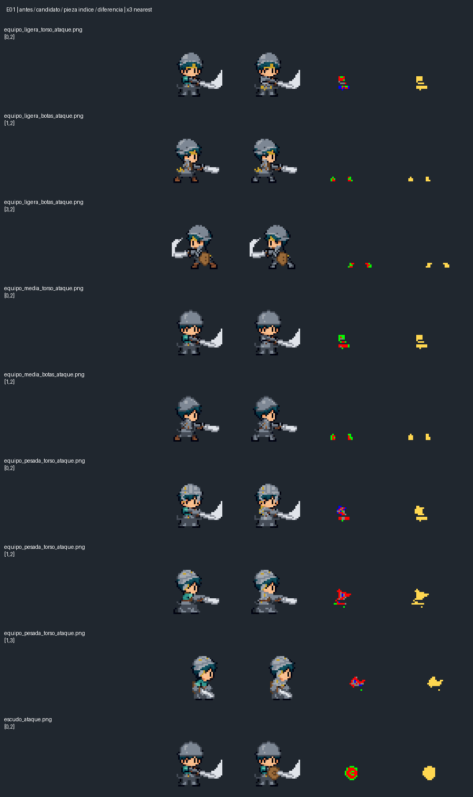

Candidato E01_v001 · 9 celdas corregidas · 263 celdas conservadas · estela recuperada del original.
Preview aislado: no prueba la integración ni la red de Godot. El agarre oculto del escudo requiere aceptación visual. Paletas existentes, sin nueva paleta global.
Antes · frente / derecha / espalda / izquierda
Candidato · frente / derecha / espalda / izquierda
Fases reales: preparado 50 ms, anticipación 50 ms, impacto 100 ms, recuperación 250 ms. Al pausar puedes inspeccionar cada cuadro. La estela de anticipación izquierda se conserva como en la fuente.
Antes / después de aplicar solo esa celda / pieza indexada / diferencia.
